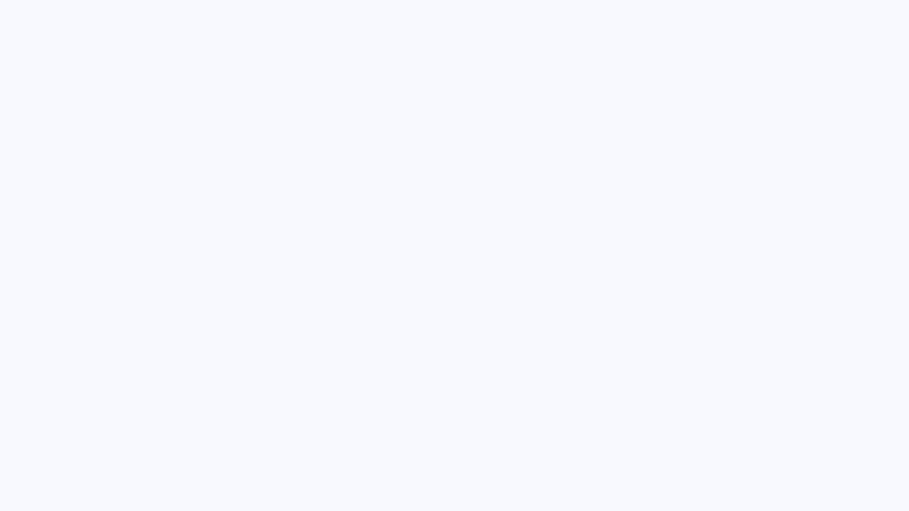
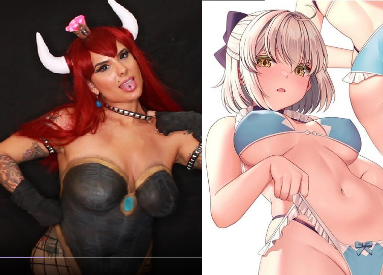

Hentai Artist's Drawn Out Battle
Art comes in many forms, but one controversial streamer has garnered unwanted attention in the form of a
three-day ban for drawing lewd anime-style characters. The 2d doodle doodler in question is French illustrator and concept artist,
Saruei.
After receiving a warning from Twitch staff for her drawings, Saruei raised questions about what precisely in her
illustrations crossed the invisible line. She theorised that perhaps it was her inclusion of "camel toe" or nipple outlines on some characters, which were in violation of the streaming site's Terms of Service.
Saruei indicated that she would happily comply with Twitch's terms, however this was impossible as they did not present them to her beyond vague guidelines such as prohibiting "suggestive poses". Saruei also argued that, although certain areas such as "the asshole and pussy" may be too explicit for the site (even with a mature content warning), it is common and necessary for many artists to depict the nude form as part of their drawing process. In addition, she highlighted the benefit to aspiring artists in being able to view a more experienced hand's ability to illustrate raw human anatomy.

Above: The first clip from Saruei to catch widespread attention online.
The indication by Twitch that "suggestive poses" were a violation of the site's Terms of Service sparked online outrage at the apparent inconsistency of in the enforcement of this rule. It was widely noted that many "Just Chatting" streamers had employed practises on par with the level of suggestive posing found in Saruei's illustrations. Notable examples include streamers, in clothing designed to accentuate certain attributes, "squatting" or
bending provocatively to thank those who donate to them. Other's indicated that
Twitch supports the near-total nudity present in body painting streams. Such content, which may surely be considered
similar in "lewdness" to a semi-clothed cartoon figure, is permitted on the site as a form of artistic expression.

Above-Left: Screenshot taken of partnered streamer
ZombiUnicorn posing nude during a
bodypainting stream. Above-Right: Illustration by
Saruei indicated by Twitch staff to be in violation of TOS.
As a result of her illustrations, Twitch deemed it pertinent to issue a three day ban to Saruei. This only served to further spur unrest in the community, as curious onlookers identified yet another source of inconsistency, this time stemming from within the ranks of the site itself.
Twitch-employed, 2D illustrator
Darren Lim Geers known by his online alias
GeersArt was seemingly found to be a perpetrator of the same ToS violation as Saruei. Geers streamed himself drawing an apparently female, humanoid character. His illustration highlighting the characters ample bust, her form completely bereft of any clothing, only the merest tendrils covering her otherwise exposed areolae.
Above: Illustration on stream from Twitch employee
GeersArt of a nude female figure.
As of the time of writing, GeersArt's channel remains intact, avoiding the fate of Saruei. Although disappointing, little can be done about her ban, so Saruei must abide by Twitch's ruling and wait for the three days to ellapse.
This instance of inconsistent moderation on the site is another case on the ever growing pile, to be forgotten by the masses after a handful days when the next major upset occurs... which will be covered right here, on
TheDailyBate.